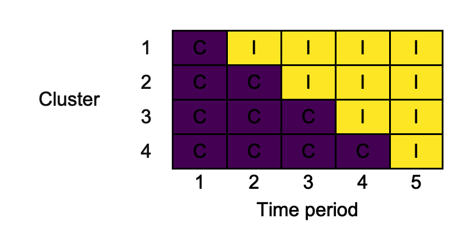

Draw and export stepped-wedge cluster randomised trial designs


Description
swcrt is an R package that helps produce diagrams of stepped-wedge cluster randomised trial (SW-CRT) designs, like those advocated for inclusion when reporting SW-CRTs by Hemming et al. (2018). The produced diagrams can be exported in .docx, .png, and .pptx formats.
Getting started
The latest development version of swcrt available from GitHub can be installed with:
devtools::install_github("mjg211/swcrt")
An introductory example of how to make use of the package’s core functionality can be found below. More detailed support is available in the package vignette, which can be accessed with vignette("swcrt"). For further help, please contact Michael Grayling at michael.grayling@newcastle.ac.uk.
Example
As a basic example, we consider reproducing the 4-cluster 5-time period design used in the trial reported by Bashour et al. (2013). First, create the design matrix using design_sw():
Here, we’ve labelled the two conditions "C" and "I" to reflect their role as the control and intervention arms. The input clusters_per_wave is used to specify the design; a single cluster switches in time periods two through five. We can now plot this using draw_sw(), exporting in .png format:
png_of_design <- draw_sw(X, make = "png")
The resultant .png looks as follows:

References
Bashour HN, Kanaan M, Kharouf MH, Abdulsalam AA, Tabbaa MA, Cheikha SA. The effect of training doctors in communication skills on women’s satisfaction with doctor–woman relationship during labour and delivery: A stepped wedge cluster randomised trial in Damascus. BMJ Open 2013;3, e002674. DOI: 10.1136/bmjopen-2013-002674. PMID: 23945729.
Hemming K, Taljaard M, McKenzie JE, Hooper R, Copas A, Thompson JA, Dixon-Woods M, Aldcroft A, Doussau A, Grayling M, Kristunas C, Goldstein CE, Campbell MK, Girling A, Eldridge S, Campbell MJ, Lilford RJ, Weijer C, Forbes AB, Grimshaw JM. Reporting of stepped wedge cluster randomised trials: Extension of the CONSORT 2010 statement with explanation and elaboration. BMJ 2018;363,k1614. DOI: 10.1136/bmj.k1614. PMID: 30413417.